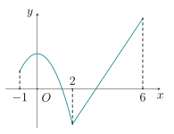
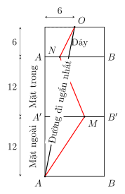
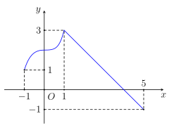
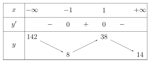
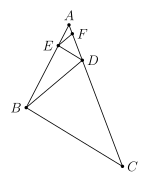
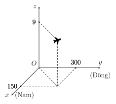
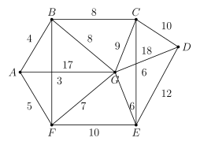

Phần I. Thí sinh trả lời từ câu 1 đến câu 12, mỗi câu hỏi chọn một phương án.
Câu 1
Cho hàm số y=f(x) có đạo hàm trên R thỏa f′(x)<0,∀x∈(1;2) và f′(x)>0,∀x∈(2;3). Phát biểu nào sau đây là đúng?
A. Hàm số y=f(x) đồng biến trên cả hai khoảng (1;2) và (2;3).
B. Hàm số y=f(x) nghịch biến trên cả hai khoảng (1;2) và (2;3).
C. Hàm số y=f(x) đồng biến trên khoảng (1;2) và nghịch biến trên khoảng (2;3).
D. Hàm số y=f(x) nghịch biến trên khoảng (1;2) và đồng biến trên khoảng (2;3).
Hiện/ẩn lời giải — Câu 1
Vì f′(x)<0,∀x∈(1;2) nên hàm số nghịch biến trên khoảng (1;2).
Vì f′(x)>0,∀x∈(2;3) nên hàm số đồng biến trên khoảng (2;3).
Câu 2
Giá trị cực đại của hàm số f(x)=2x3−9x2−24x+11 là
A. –1.
B. 24.
C. 4.
D. –111.
Hiện/ẩn lời giải — Câu 2
Ta có f′(x)=6x2−18x−24=6(x2−3x−4).
Giải phương trình f′(x)=0 tìm được x=–1,x=4
Đạo hàm đổi dấu từ dương sang âm qua x=–1, do đó x=–1 là điểm cực đại.
Giá trị cực đại của hàm số là f(–1)=24.
Câu 3
Cho lăng trụ ABC.A′B′C′. Khẳng định nào sau đây đúng?
A.BA+A′C′=BC.
B.BA+A′C′=BC′.
C.BA+A′C′=C′B.
D.BA+A′C′=B′C′.
Hiện/ẩn lời giải — Câu 3
Vì ABC.A′B′C′ là hình lăng trụ nên A′C′=AC.
Do đó, BA+A′C′=BA+AC=BC.
Câu 4
Hàm số y=f(x) xác định trên đoạn [−1;6] và có đồ thị như hình vẽ.

Hàm số đã cho nghịch biến trên khoảng nào sau đây?
A.(–1;2).
B.(0;2).
C.(2;6).
D.(–2;0).
Hiện/ẩn lời giải — Câu 4
Dựa vào đồ thị, trên khoảng (0;2) đồ thị đi xuống từ trái sang phải, suy ra hàm số nghịch biến trên khoảng (0;2).
Câu 5
Cho tứ diện ABCD. Lấy G là trọng tâm của tam giác ABC. Phát biểu nào sau đây là sai?
A.GA+GB+GC=0.
B.GA+GB+GC+GD=0.
C.GD−GA=AD.
D.DA+DB+DC=3DG.
Hiện/ẩn lời giải — Câu 5
Vì G là trọng tâm của tam giác ABC nên GA+GB+GC=0 là khẳng định đúng.
Do đó GA+GB+GC+GD=0+GD=GD=0 (vì D không trùng G).
Vậy phát biểu B là sai.
Câu 6
Một chiếc hộp hình lập phương ABCD.A′B′C′D′ có cạnh bằng 12 cm, mặt trên A′B′C′D′ không nắp. Có một con kiến ở đỉnh A bên ngoài hộp và một miếng mồi của kiến tại điểm O là tâm đáy ABCD ở bên trong hộp. Quãng đường ngắn nhất mà con kiến tìm đến miếng mồi (làm tròn đến hai chữ số thập phân) là
A. 32,49 cm.
B. 36,29 cm.
C. 12 cm.
D. 30,59 cm.
Hiện/ẩn lời giải — Câu 6
Con kiến ở A phía ngoài hộp, còn O nằm ở mặt đáy phía trong hộp. Vì vậy để đến O, kiến phải đi qua ba mặt: mặt bên phía ngoài → mặt bên phía trong → mặt đáy. Do tính đối xứng, ta chọn mặt bên ABB′A′ và trải phẳng ba mặt mà kiến đi qua như hình sau:

Đầu tiên, kiến bò trên mặt ngoài ABB′A′ từ điểm A đến điểm M nào đó nằm trên mép trên A′B′;
Sau khi đến mép A′B′, kiến bò trên mặt trong của chính mặt bên ABB′A′ đó từ điểm M đến điểm N nào đó trên cạnh AB;
Trên mặt đáy ABCD, kiến bò từ điểm N tới điểm O là tâm hình vuông ABCD.
Rõ ràng, tổng quãng đường kiến bò được là AM+MN+NO mà ta luôn có
AM+MN+NO⩾AO.
Do đó, đường đi ngắn nhất của kiến có độ dài là
302+62≈30,59 cm.
Vậy quãng đường ngắn nhất con kiến phải đi là 30,59 cm.
Câu 7
Giá trị nhỏ nhất của hàm số f(x)=x4−8x2+a, (a∈R) trên đoạn [−1;3] bằng
A. –6.
B.a.
C.–16+a.
D.9+a.
Hiện/ẩn lời giải — Câu 7
Ta có f′(x)=4x3−16x=4x(x2−4)=0, suy ra x=0∈[−1;3] hoặc x=2∈[−1;3] hoặc x=–2∈/[−1;3].
Tính các giá trị: f(–1)=a−7,f(0)=a,f(2)=a−16,f(3)=a+9.
So sánh các giá trị, ta được [−1;3]minf(x)=f(2)=–16+a.
Câu 8
Hàm số y=f(x) xác định trên đoạn [−1;5] và có đồ thị như hình vẽ.

Tập giá trị của hàm số y=f(x) trên đoạn [−1;5] là
A.[−1;5].
B.[1;3].
C.[−1;3].
D.[1;5].
Hiện/ẩn lời giải — Câu 8
Quan sát đồ thị hàm số trên đoạn [−1;5], ta thấy giá trị nhỏ nhất của y là –1 (tại x=5) và giá trị lớn nhất của y là 3 (tại x=1).
Do đó, tập giá trị của hàm số y=f(x) là [−1;3].
Câu 9
Mỗi ngày bác Bình đều đi bộ để rèn luyện sức khoẻ. Quãng đường đi bộ mỗi ngày (đơn vị: km) của bác Bình trong 20 ngày được thống kê lại ở bảng sau:
Quãng đường
[2,7;3,0)
[3,0;3,3)
[3,3;3,6)
[3,6;3,9)
[3,9;4,2)
Số ngày
3
6
5
4
2
Khoảng biến thiên của mẫu số liệu ghép nhóm trên bằng
A.1,2.
B.0,362.
C.3,39.
D.1,5.
Hiện/ẩn lời giải — Câu 9
Khoảng biến thiên của mẫu số liệu ghép nhóm là R=4,2−2,7=1,5.
Câu 10
Trong không gian Oxyz, cho hai điểm A(1;1;2) và B(3;1;0). Trung điểm của đoạn thẳng AB có tọa độ là
A.(2;1;1).
B.(4;2;2).
C.(2;0;–2).
D.(1;0;–1).
Hiện/ẩn lời giải — Câu 10
Tọa độ trung điểm I của AB là I(21+3;21+1;22+0)=(2;1;1).
Câu 11
Đường tiệm cận xiên của đồ thị hàm số y=x−2x2+2x−2 là
A.y=−x+3.
B.y=x+3.
C.y=x−3.
D.y=x+4.
Hiện/ẩn lời giải — Câu 11
Ta có y=x−2x2+2x−2=x+4+x−26.
Do x→∞limx−26=0 nên đường tiệm cận xiên của đồ thị hàm số là y=x+4.
Câu 12
Trong không gian Oxyz, cho điểm A(–3;1;–4),B(1;–5;2). Đường thẳng AB cắt mặt phẳng (Oxy) tại điểm
A.M(−31;–3;0).
B.N(31;3;0).
C.P(0;3;1).
D.Q(–3;1;0).
Hiện/ẩn lời giải — Câu 12
Vectơ chỉ phương AB=(4;–6;6).
Phương trình tham số của đường thẳng AB:
⎩⎨⎧x=–3+4ty=1−6tz=–4+6t
Đường thẳng AB cắt (Oxy) (z=0) tại điểm có –4+6t=0⇒t=32.
Tọa độ giao điểm là x=–3+4⋅32=−31,y=1−6⋅32=–3,z=0, tức điểm M(−31;–3;0).
Phần II. Thí sinh trả lời từ câu 1 đến câu 4, trong ý a), b), c), d) ở mỗi câu câu, thí sinh chọn ĐÚNG hoặc SAI.
Câu 1
Hàm số y=f(x) liên tục trên R và có bảng biến thiên như sau:

A. Đồ thị hàm số đã cho có hai đường tiệm cận ngang.
B. Giá trị nhỏ nhất của hàm số trên (−∞;+∞) bằng 8.
C. Hàm số đồng biến trên (8;38).
D. Giá trị lớn nhất của hàm số trên R bằng 142.
Hiện/ẩn lời giải — Câu 1
a)Đúng. Ta có x→−∞limf(x)=142 và x→+∞limf(x)=14, nên đồ thị có hai tiệm cận ngang y=142 và y=14.
b)Đúng. Từ bảng biến thiên, f(–1)=8 và mọi giá trị khác của hàm số đều lớn hơn hoặc bằng 8. Vậy giá trị nhỏ nhất là 8.
c)Sai. Khoảng đồng biến phải là khoảng của biến x. Từ bảng biến thiên, hàm số đồng biến trên (–1;1), không phải (8;38).
d)Sai. Ta có x→−∞limf(x)=142, nhưng hàm số giảm từ 142 xuống 8 trên (−∞;–1), nên f(x)<142 với mọi x∈R. Do đó hàm số không có giá trị lớn nhất trên R.
Câu 2
Xét tam giác ABC có AC=2AB và BC= 10 cm. Trên cạnh AC lấy điểm D sao cho AD=41AC, trên cạnh AB lấy điểm E sao cho AE=41AB, trên cạnh AD lấy điểm F sao cho AF=41AD và tiếp tục lấy các điểm G,H,I,J... (vô hạn lần) theo quy luật đó. Xét tính đúng sai các mệnh đề sau.

A.ACAB=ABAD.
B. Tam giác ABD đồng dạng với tam giác ABC.
C.BD= 5 cm; DE= 3 cm.
D. Độ dài đường gấp khúc CBDEFGH… bằng 20 cm.
Hiện/ẩn lời giải — Câu 2
a)Đúng. Vì AC=2AB⇒ACAB=21. Lại có AD=41AC=21AB⇒ABAD=21. Vậy ACAB=ABAD.
b)Sai. Xét △ABD và △ACB có A chung và ACAB=ABAD=21, nên △ABD∼△ACB, chứ không phải △ABC.
c)Sai. Vì △ABD∼△ACB tỉ số k=21 nên BD=21BC= 5 cm. Tương tự, △ADE∼△ABD tỉ số 41 nên DE=41BD= 1,25 cm = 3 cm.
d)Đúng. Độ dài các đoạn nối tiếp nhau tạo thành một cấp số nhân lùi vô hạn với u1=BC=10 và công bội q=21, nên tổng độ dài S=1−2110= 20 cm.
Câu 3
Hình vẽ sau, điểm M mô tả vị trí của máy bay vào thời điểm 9h30 phút. Biết các đơn vị trên hình tính theo đơn vị km. Trong các khẳng định sau đây, khẳng định nào đúng, khẳng định nào sai?

A. Máy bay đang ở độ cao 9 km.
B. Tọa độ của máy bay (300;150;9).
C. Phi công để máy bay ở chế độ tự động với vận tốc theo hướng đông là 750 km/h, độ cao không đổi. Biết rằng gió thổi theo hướng đông với vận tốc 10 m/s. Giả sử vận tốc và hướng gió không đổi thì lúc 10h30 phút máy bay ở tọa độ (150;1086;9).
D. Sau khi bay đến vị trí lúc 10h30 thì máy bay bay theo hướng ngược lại với vận tốc 800 km/h với độ cao không đổi, biết lúc đó trời lặng gió thì lúc 11h máy bay ở tọa độ (686;150;9).
Hiện/ẩn lời giải — Câu 3
a)Đúng. Độ cao của máy bay chính là cao độ z= 9 km.
b)Sai. Dựa vào hệ trục tọa độ Oxyz, hoành độ x=150, tung độ y=300, cao độ z=9. Do đó tọa độ của máy bay là (150;300;9).
c)Đúng. Đổi 10 m/s = 36 km/h. Vận tốc tổng cộng theo hướng đông (trục Oy) là 750+36= 786 km/h.
Thời gian bay từ 9h30 đến 10h30 là 1 giờ.
Tung độ mới y=300+786⋅1=1086. Tọa độ mới là (150;1086;9).
d)Sai. Máy bay bay theo hướng ngược lại (hướng tây, ngược chiều dương của trục Oy) với vận tốc 800 km/h trong 0,5 giờ.
Quãng đường đi được là 800⋅0,5= 400 km.
Tung độ mới y=1086−400=686. Do đó tọa độ mới phải là (150;686;9).
Câu 4
Khảo sát chiều cao của 20 học sinh nam lớp 12A của một trường THPT X, người ta được kết quả thống kê trong bảng sau:
Chiều cao (cm)
[160;165)
[165;170)
[170;175)
[175;180)
[180;185)
Số học sinh
3
5
7
4
1
A. Gọi x1;x2;…;x20 là mẫu số liệu gốc gồm chiều cao của 20 học sinh trên được xếp theo thứ tự không giảm. Khi đó, x3∈[165;170) và x9∈[170;175).
B. Tứ phân vị thứ ba của mẫu số liệu ghép nhóm đã cho bằng 175.
C. Khoảng tứ phân vị của mẫu số liệu ghép nhóm đã cho là ΔQ=Q3−Q1=8,5.
D. Chọn ngẫu nhiên một học sinh trong nhóm khảo sát nói trên, xác suất chọn được học sinh có chiều cao từ 175 cm trở lên bằng 0,25.
Hiện/ẩn lời giải — Câu 4
a)Sai. Ba học sinh đầu tiên thuộc nhóm [160;165), nên x3∈[160;165). Do 3+5=8, nên x9∈[170;175).
b)Đúng. Vị trí Q3 là 43n=15. Nhóm chứa Q3 là [170;175), nên Q3=170+715−8⋅5=175.
c)Sai. Q1 thuộc nhóm [165;170), nên Q1=165+55−3⋅5=167. Do đó ΔQ=175−167=8.
d)Đúng. Có 4+1=5 học sinh cao từ 175 cm trở lên, nên xác suất là 205=0,25.
Phần III. Thí sinh trả lời từ câu 1 đến câu 6 (không làm tròn các phép tính trung gian trong các câu từ 1 đến câu 6).
Câu 1
Một doanh nghiệp dự kiến sản xuất không quá 2000 sản phẩm cùng loại. Giả sử rằng doanh thu của doanh nghiệp khi sản xuất x sản phẩm (x∈N;0⩽x⩽2000) là R(x)=16x−0,005x2 (triệu đồng) và doanh nghiệp phải nộp một khoản thuế là 5% của doanh thu R(x). Chi phí để sản xuất mỗi sản phẩm là bốn triệu đồng. Lợi nhuận của doanh nghiệp (khi sản xuất x sản phẩm) được tính theo công thức: Lợi nhuận bằng doanh thu trừ đi thuế và chi phí. Doanh nghiệp phải sản xuất bao nhiêu sản phẩm để thu được lợi nhuận lớn nhất?
Hiện/ẩn lời giải — Câu 1
Tiền thuế là 5%R(x), chi phí sản xuất là 4x (triệu đồng). Do đó lợi nhuận là
Xét trên [0;2000], ta có P′(x)=11,2−0,0095x. Cho P′(x)=0 được
x=1922400≈1178,95.
Vì x∈N, so sánh hai số nguyên gần nhất là 1178 và 1179, ta được P(1179)>P(1178). Như vậy doanh nghiệp nên sản xuất 1179 sản phẩm.
Câu 2
Một bác Shipper giao hàng xuất phát từ kho A để lấy hàng và đi giao tất cả các con đường sau đó lại trở về kho A để trả lại những hàng hóa mà khách hàng chưa nhận. Con đường có sơ đồ và thời gian giao hàng (phút) trên mỗi con đường được mô tả trong hình sau. Thời gian ngắn nhất để bác Shipper hoàn thành công việc trên là bao nhiêu phút?

Hiện/ẩn lời giải — Câu 2
Đây là bài toán người đưa thư: bác Shipper phải đi qua tất cả các cạnh và cuối cùng quay lại A.
Tổng thời gian đi qua mỗi con đường đúng một lần là
4+8+10+12+10+5+3+6+17+8+9+18+6+7=123 phút.
Các đỉnh B,C,E,F,G có bậc chẵn, còn A,D có bậc lẻ. Muốn có một chu trình xuất phát và kết thúc tại A, cần đi lặp thêm một đường ngắn nhất nối hai đỉnh bậc lẻ A,D.
Đường ngắn nhất là A→B→C→D, có thời gian 4+8+10=22 phút.
Vậy thời gian ngắn nhất là 123+22=145 phút.
Câu 3
Trong không gian Oxyz, cho tam giác ABC có A(–4;–1;2),B(3;5;–6) và C(a;b;c). Biết trung điểm cạnh AC thuộc trục tung, trung điểm cạnh BC thuộc mặt phẳng (Oxz). Tính T=2a+b−c.
Hiện/ẩn lời giải — Câu 3
Gọi M là trung điểm AC⇒M(2a−4;2b−1;2c+2).
Vì M∈Oy⇒{2a−4=02c+2=0⇒{a=4c=–2.
Gọi N là trung điểm BC⇒N(2a+3;2b+5;2c−6).
Vì N∈(Oxz)⇒2b+5=0⇒b=–5.
Do đó C(4;–5;–2).
Vậy T=2a+b−c=2(4)+(–5)−(–2)=8−5+2=5.
Câu 4
Cho tập hợp X={1;2;3;4;5;6;7;8}. Gọi S là tập hợp tất cả các số tự nhiên có 4 chữ số được lập từ các chữ số thuộc tập X. Chọn ngẫu nhiên một số từ tập hợp S. Xác suất để chọn được một số chia hết cho 3 bằng ba (với a,b∈N∗,ba là phân số tối giản). Tính T=a+b.
Hiện/ẩn lời giải — Câu 4
Trong X có 2 số chia hết cho 3, 3 số chia 3 dư 1 và 3 số chia 3 dư 2.
Gọi số cần tìm có dạng abcd. Đầu tiên, ta xem có bao nhiêu cách lập được abc mà có tổng chia hết cho 3. Để tổng của ba chữ số này chia hết cho 3, bộ ba số dư có thể thuộc một trong bốn dạng:
(0,0,0),(1,1,1),(2,2,2),(0,1,2).
Ba dạng đầu có lần lượt 23,33,33 cách. Riêng dạng thứ tư (0,1,2):
chọn một chữ số dư 0: 2 cách;
chọn một chữ số dư 1: 3 cách;
chọn một chữ số dư 2: 3 cách;
ba chữ số này (khác nhau) mà có thể nằm ở ba vị trí a,b,c nên có 3!=6 cách.
Do đó dạng thứ tư có 6⋅2⋅3⋅3=108 cách. Vì vậy tổng cách lập được abc mà có tổng chia hết cho 3 là:
23+33+33+6⋅2⋅3⋅3=8+27+27+108=170.
Do tính đối xứng, hai trường hợp tổng chia 3 dư 1 và dư 2 đều có
283−170=171 cách. Sau khi có được abc, ta cần xem có bao nhiêu cách lập d.
nếu a+b+c≡0, thì chọn d chia hết cho 0: có 2 cách;
nếu a+b+c≡1, thì chọn d chia hết cho 2: có 3 cách;
nếu a+b+c≡2, thì chọn d chia hết cho 1: có 3 cách.
Do đó số trường hợp thuận lợi là
170⋅2+171⋅3+171⋅3=1366.
Suy ra P=841366=2048683, nên T=683+2048=2731.
Câu 5
Một quần thể vi khuẩn được nuôi cấy trong phòng thí nghiệm. Nồng độ dinh dưỡng S (đơn vị: mg/ℓ) thay đổi theo thời gian t giờ (t⩾0) được mô hình hóa bởi hàm số: S(t)=t+110t+5. Biết tốc độ sinh trưởng V của vi khuẩn phụ thuộc vào nồng độ dinh dưỡng theo hàm số V(S)=S+25S. Khi thời gian t kéo dài, tốc độ sinh trưởng V tăng dần và ổn định quanh một ngưỡng K nhất định. Hỏi sau bao nhiêu phút thì tốc độ sinh trưởng của vi khuẩn đạt 90% ngưỡng K?
Hiện/ẩn lời giải — Câu 5
Ta có t→+∞limS(t)=10, nên
K=V(10)=625.
Khi V(S)=90%K=415, ta có
S+25S=415⇒S=6.
Do đó t+110t+5=6⇒t=41 giờ = 15 min.
Câu 6
Trong không gian với hệ trục tọa độ Oxyz, mặt phẳng (P):bcx+acy+abz−abc=0 qua điểm M(2;4;8) và cắt các tia Ox,Oy,Oz lần lượt tại A,B,C sao cho OA=2OB=4OC. Tính T=a+b+c.
Hiện/ẩn lời giải — Câu 6
Ta viết lại phương trình của mặt phẳng (P):
(P):ax+by+cz=1,
với a,b,c>0.
Từ OA=2OB=4OC suy ra a=2b=4c, nên a=4c,b=2c. Mà M(2;4;8)∈(P) nên